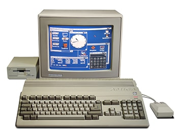

This is a page about computer.
Made by: Saimon Ghimire

A computer is an electronic devices that takes in
input, processes it and gives meaningful result. Computer is made up of hardware
and software components. Hardware components of a computer can be classified as:
- 1. Input devices:
The devices used to feed in raw data and instructions to the computer.
For eg: keyboard, mouse, microphone, etc.
- 2. Processing devices:
The devices that process the raw data given by the user according to
the instructions and produces meaningful output. Processing devices can be
classified as ALU, CU and Registers.
- 3. Output devices:
The devices that display the processed result to the user. For eg: monitor,
speaker, projecter, etc.
Below is an image of a computer system.
Computer generations and their features.
| Generation |
Year |
Main component |
Example |
| From |
To |
| First |
1940 |
1956 |
vacuum tubes |
ENIAC, EDVAC |
| Second |
1956 |
1963 |
Transistors |
IBM 1620, PDP 8 |
| Third |
1964 |
1970 |
ICs |
VAX 750, ICL 1900 |
| Fourth |
1971 |
To date |
LSI & VLSI |
Apple II, DEC 10 |
| Fifth |
Present |
Future |
Supercconductors |
A.I robots |